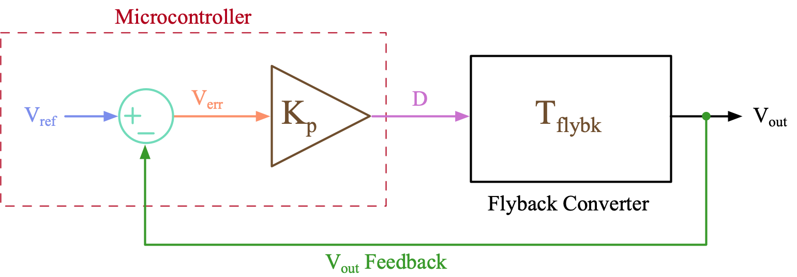
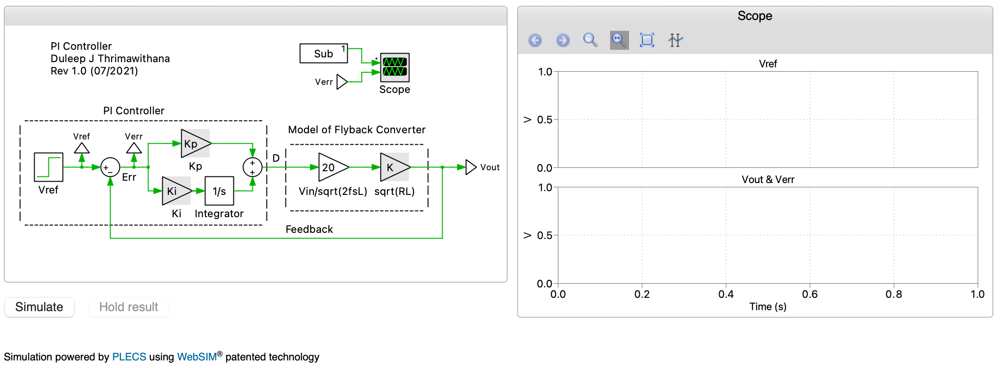
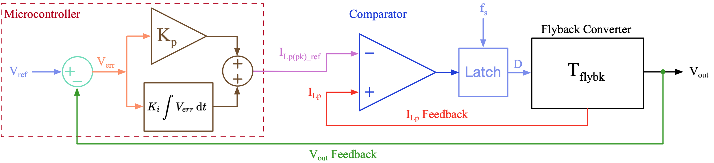
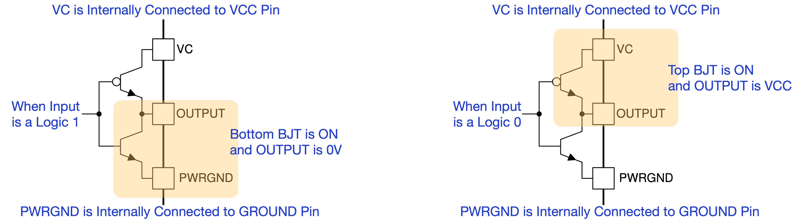

class: title-slide count: false .logo-title[] ## ELECTENG 311 # Electronics Systems Design ### Closed Loop Controller Design .TitleAuthor[Duleepa J Thrimawithana] --- layout: true name: template_slide .logo-slide[] .footer[[Duleepa J Thrimawithana](https://www.linkedin.com/in/duleepajt), Department of Electrical, Computer and Software Engineering (2021)] --- name: S1 # Learning Objectives - Why do we need closed loop control? - Behavior of a closed loop controller - Steady-state error - Impact of gain on steady-state error - Stability of the controller - PI controllers - Peak current mode control - UC3843 control IC - How do we provide a feedback of current? - How is peak current determined? - How to setup the oscillator? - How do we use the output to control the flyback converter? --- class: title-slide layout: false count: false .logo-title[] # Closed-Loop Control ### An Introduction --- layout: true name: template_slide .logo-slide[] .footer[[Duleepa J Thrimawithana](https://www.linkedin.com/in/duleepajt), Department of Electrical, Computer and Software Engineering (2021)] --- name: S2 # Open-Loop Control (PI) .center[<img src="img/Flyback_Main.png" height="165px">] - If we know precise details of our flyback converter, then for example, using a microcontroller we can generate the correct D for the switch to achieve our target output - We call this type of control **open-loop control** as we do not monitor the converter to deduce D we should be operating at - In real life, component values are not exact and the load resistance will change, making it impossible to know D needed for a specific V<sub>out</sub> [since](https://uoa-ee311.github.io/presentations/AnalogL1/presentation.html#23), \\[ V\_{out} = \sqrt{ {R\_{Load}}/ \left({2f\_s L\_p} \right) } \, V\_{in}D \\] --- name: S3 # Open-Loop Control (PII) .center[] - A flyback can be modelled as a black box, which takes D as the input and produce V<sub>out</sub> as the output - In the simplest form, ignoring the impact of energy storage elements, this black box mathematically can be represented as a transfer function, T<sub>flybk</sub>, where, \\[ \frac {V\_{out}} {D} = \sqrt{ \frac {R\_{Load}} {2f\_s L\_p} } \, V\_{in} = T\_{flybk} \\] - As an example, if R<sub>Load</sub> changes by twice then V<sub>out</sub> will change by 1.41 times unless we change D --- name: S4 # Demo: Open-Loop Control .questions[ Lets consider the same flyback converter where V<sub>in</sub>=20V, L<sub>p</sub>=5µH, f<sub>s</sub>=100kHz and R<sub>load</sub>=100Ω. If D is held at 0.5 by a microcontroller then it will be generating a 100V output. What will be the output if R<sub>load</sub> increases to 200Ω? Is there a way for the microcontroller to learn the load has changed? ] .center[] --- name: S5 # Closed-Loop Control & Feedback .center[] - One way to know if the load or other circuit parameters that impacts V<sub>out</sub> has changed is to measure V<sub>out</sub> and use this information inside the microcontroller to help deduce an appropriate D to use - This means we monitor and use V<sub>out</sub> as a **feedback** to **control** V<sub>out</sub> - There many ways to use V<sub>out</sub> feedback to derive D but it is not a straightforward task - We call this type of control **closed-loop** control - This is because V<sub>out</sub> is not only a function of R<sub>load</sub> but it also depends on other circuit parameters - A feedback of just only V<sub>out</sub> would not tell us which of those parameters has changed --- name: S6 # Error Voltage .center[] - As the first step, we can compare the feedback of V<sub>out</sub> with our target or the **reference** V<sub>out</sub>, V<sub>ref</sub>, to determine if D needs to be increased or reduced - V<sub>ref</sub> - V<sub>out</sub> is referred to as the **error voltage**, V<sub>err</sub> - Note that V<sub>out</sub> is directly proportional to D in a flyback converter - A negative V<sub>err</sub> therefore tells that D needs to be reduced - A positive V<sub>err</sub> therefore tells that D needs to be increased - How do we deduce by how much to reduce/increase D by? --- name: S7 # Proportional Controller .center[] - Since V<sub>out</sub> is proportional to D, we can apply a **proportional gain**, K<sub>p</sub> to V<sub>err</sub> to deduce an approximate D - Looking at [T<sub>flybk</sub>](#S3) we could see that the proportion D needs to be change by depends on which parameter changed - To find which value of K<sub>p</sub> to use, lets express V<sub>out</sub> as a function of K<sub>p</sub> \\[ V\_{out} = V\_{err} K\_{p} T\_{flybk} = \left( V\_{ref} - V\_{out} \right) K\_{p} T\_{flybk} \quad \Rightarrow \quad V\_{out} = V\_{ref} \frac {K\_p T\_{flybk}} {1 + K\_p T\_{flybk}} \\] --- name: S8 # Proportional Gain - K<sub>p</sub> .center[] - From our [analysis](#S7), we could see that if K<sub>p</sub> is chosen to be very large such that K<sub>p</sub>T<sub>flybk</sub> >> 1, then V<sub>out</sub> ≈ V<sub>ref</sub> - We could also observe this in our system diagram where D = K<sub>p</sub>V<sub>err</sub> - Since 0 ≤ D ≤ 1, larger the K<sub>p</sub> smaller the V<sub>err</sub> - Thus, a proportional controller with a sufficiently large K<sub>p</sub> will help achieve an V<sub>out</sub> that closely follow a target voltage set by V<sub>ref</sub> - How large can K<sub>p</sub> be and would there be any adverse issues using a large K<sub>p</sub>? --- name: S9 # Demo: Closed-Loop Proportional Control .questions[ Lets consider the same flyback converter where V<sub>in</sub>=20V, L<sub>p</sub>=5µH, f<sub>s</sub>=100kHz and R<sub>load</sub>=100Ω. The simplified T<sub>flybk</sub> we derived ignoring the impact of energy storage elements thus equates to 200. In your design, the user will set V<sub>ref</sub> to program the required V<sub>out</sub>. Explore how K<sub>p</sub> impacts the ability of V<sub>out</sub> to follow V<sub>ref</sub>. If R<sub>load</sub> doubles, how much does V<sub>err</sub> change by? ] .center[] --- name: S10 # Instability (PI) - V<sub>ref</sub> can be modelled as a sinusoidal signal to emulate a user changing V<sub>ref</sub> to set different V<sub>out</sub> values - Disturbances we make to the system, e.g., changing V<sub>ref</sub> or R<sub>load</sub>, can be considered to generate a spectrum of frequencies - In a real flyback converter, to store energy in L<sub>p</sub> and to charge/discharge C<sub>o</sub> takes time, and thus a change in D does not result in an immediate change in V<sub>out</sub> - The oversimplified T<sub>flybk</sub> ignored these delays - Lets exaggerate these delays and assume that at the frequency of V<sub>ref</sub>, which will be the same as the frequency of D, the flyback converter introduce a half-cycle delay (i.e. 180<sup>0</sup> delay) - A 180<sup>0</sup> delay to a sinusoidal wave represents a negative gain - Thus, T<sub>flybk</sub> at this specific frequency can be written as -T<sub>flybk</sub> - Note, |T<sub>flybk</sub>| at this frequency might be much less than, \\[ T\_{flybk} = \sqrt{ {R\_{Load}} / ({2f\_s L\_p} }) \, V\_{in} \\] --- name: S11 # Instability (PII) .center[] - We can express V<sub>out</sub> under the specific conditions mentioned in the previous slide, \\[ V\_{out} = -V\_{ref} \frac {K\_p T\_{flybk}} {1 - K\_p T\_{flybk}} \\] - From this analysis we can see that V<sub>out</sub> tends to infinity when K<sub>p</sub>T<sub>flybk</sub> approaches 1 - Thus to ensure the closed-loop controlled system is **stable**, K<sub>p</sub> needs to be sufficiently small to ensure K<sub>p</sub>T<sub>flybk</sub> < 1, if T<sub>flybk</sub> introduce a 180<sup>0</sup> delay at a certain frequency - In real life, T<sub>flybk</sub> will have a frequency dependent gain and a phase --- name: S12 # Demo: Instability .questions[ Lets consider the same flyback converter where V<sub>in</sub>=20V, L<sub>p</sub>=5µH, f<sub>s</sub>=100kHz and R<sub>load</sub>=100Ω. V<sub>ref</sub> is modelled as a sinusoidal wave with a 1kHz frequency to represent a user requesting different V<sub>out</sub> values. Lets assume T<sub>flybk</sub> is -10 at 1kHz. Explore how K<sub>p</sub> impacts the stability of the system. ] .center[] --- name: S13 # Sensitivity to Noise .center[] - A flyback converter, like any other SMPS, generate significant electromagnetic noise during operation - In addition, V<sub>out</sub> itself has a ripple across it that results from physical nature of the circuit - A larger K<sub>p</sub> can amplify these unwanted components to a point that they interfere with the closed-loop controller operation - Both the noise and V<sub>out</sub> ripple components couples in with the closed-loop controller mainly though the feedback signal - The selected K<sub>p</sub> must ensure the system is not reacting to noise --- name: S14 # Integral Controller .center[] - With a proportional controller, we cannot ensure that V<sub>out</sub> is exactly the same as V<sub>ref</sub> (i.e., V<sub>err</sub> = 0) - To avoid this drawback, we can employ an integral controller, which derives D by integrating V<sub>err</sub> over time \\[ D = K\_i \int {V\_{err}} \, \mathrm{d}t \\] - D settles at the correct value as the integrator accumulates the error until V<sub>err</sub> = 0 --- name: S15 # Integral Gain - K<sub>i</sub> .center[] - Regardless what the **integral gain**, K<sub>i</sub>, is set to, an integral controller achieves 0 steady-state error - A larger K<sub>i</sub> helps the controller to reach steady-state faster - An integral controller introduces a 90<sup>0</sup> phase delay into the system - Together with the phase delay introduced by the flyback converter, this could lead to system reaching instability faster - Care must be taken to ensure the system is stable when using an integral controller --- name: S16 # Demo: Integral Controller .questions[ Lets consider the same flyback converter where V<sub>in</sub>=20V, L<sub>p</sub>=5µH, f<sub>s</sub>=100kHz and R<sub>load</sub>=100Ω. In your design, the user will set V<sub>ref</sub> to program the required V<sub>out</sub>. Explore how K<sub>i</sub> impacts the performance of the controller under a few different V<sub>ref</sub> and R<sub>load</sub> settings. ] .center[] --- name: S17 # Proportional Integral Controller (PI) .center[] - We can combine the proportional and the integral controllers to implement a much better controller - This type of controllers are referred to as Proportional Integral or **PI** controllers - K<sub>p</sub> sets the **proportional gain** while K<sub>i</sub> sets the **integral gain** \\[ D = K\_p V\_{err} + K\_i \int {V\_{err}} \, \mathrm{d}t \\] - Increasing K<sub>p</sub> and K<sub>i</sub> helps V<sub>out</sub> to reach towards the target faster but can create overshoot --- name: S18 # Proportional Integral Controller (PII) .left-column[ - Though the integral term in a PI eliminates steady-state error, it adds a phase delay to the system pushing it towards instability - Larger K<sub>i</sub> thus lead to longer settling time - To understand how K<sub>p</sub> and K<sub>i</sub> impacts the closed-loop operation, we can use the S-domain transfer function of a PI controller, \\[ D = K\_p V\_{err} + \frac {K\_i } {s} V\_{err} \quad \Rightarrow \quad \frac {D} {V\_{err}} = T\_{PI} = K\_p + \frac {K\_i } {s} \\] - To help sketch T<sub>PI</sub> bode plot, we can rewrite as, \\[ T\_{PI} = K\_p \frac { s + K\_i / K\_p} {s} = K\_p \frac { s + \omega\_z } {s} \quad \text {where} \quad \omega\_z = \frac {K\_i} {K\_p} \\] - ω<sub>z</sub> sets the frequency at which phase delay drops to 0<sup>0</sup> ] .right-column[ ] --- name: S19 # Demo: PI Controller .questions[ Lets consider the same flyback converter where V<sub>in</sub>=20V, L<sub>p</sub>=5µH, f<sub>s</sub>=100kHz and R<sub>load</sub>=100Ω. In your design, the user will set V<sub>ref</sub> to program the required V<sub>out</sub>. Explore how K<sub>i</sub> and K<sub>p</sub> impacts the performance of the controller under a few different R<sub>load</sub> settings. Here, we are stepping V<sub>ref</sub> from 100V to 150V at 0.5s. ] .center[] --- name: S20 # Peak Current Model Controller (PI) .center[] - Our [analysis of a flyback converter](https://uoa-ee311.github.io/presentations/AnalogL1/presentation.html#16) showed that I<sub>Lp(pk)</sub> is proportional to D \\[ I\_{Lp(pk)} = \frac{V\_{in}}{L\_p} DT\_{s} \quad \Rightarrow \quad D = \frac {f\_s L\_p} {V\_{in}} I\_{Lp(pk)} \\] - As such, instead of directly controlling D, we can control I<sub>Lp(pk)</sub> to achieve a similar outcome - This is **peak current mode control** and is a very common/preferred control method - The output of the PI controller now sets the reference peak current, I<sub>Lp(pk)_ref</sub> --- name: S21 # Peak Current Model Controller (PII) .center[] - A comparator is commonly used to compare I<sub>Lp</sub> fed to its non-inverting input with I<sub>Lp(pk)_ref</sub> fed to its inverting input - When I<sub>Lp</sub> rises above I<sub>Lp(pk)_ref</sub>, comparator outputs 0 indicating switch should be turned-off - A latch is typically used to hold the off-state of the switch until the end of the time-period - An oscillator connected to the latch sets the switching frequency - Since I<sub>Lp(pk)</sub> provide additional information we can now improve the functionality (e.g., implement input over current protection) --- class: title-slide layout: false count: false .logo-title[] # The UC3843 Controller IC ### Operating Principles --- layout: true name: template_slide .logo-slide[] .footer[[Duleepa J Thrimawithana](https://www.linkedin.com/in/duleepajt), Department of Electrical, Computer and Software Engineering (2021)] --- name: S22 # Proposed Controller Implementation .center[] - In your project, we will use a UC3843 peak current mode controller IC to drive S<sub>p</sub> in order to generate V<sub>out</sub> requested by the user - The PI controller will be implemented on an ATmega328PB and it will generate I<sub>Lp(pk)_ref</sub> for the UC3843 - Since ATmega328PB does not have a digital-to-analog converter (DAC), we will use its PWM unit with an RC filter to implement a DAC --- name: S23 # UC3843 Internal Diagram .center[] --- name: S24 # Internal Power Supply Circuitry .center[] - To power the IC connect a voltage source between VCC (+) and GNG (-) pins - Needs to be more than 8.4V as the undervoltage lockout (UVLO) protection will otherwise turn-off due to insufficient input voltage - Input voltage needs to be less than 30V to avoid damaging the IC - 15V to 20V is a good input voltage to aim for - IC generates its own 5V to power internal circuitry and this is also available at VREF - IC also generate its own 2.5V but this is not made available for us to use --- name: S25 # Output Circuitry .center[] - We call this output circuit configuration a **Totem Pole** or a **Push-Pull** configuration - OUTPUT pin can be connected directly to the gate of the MOSFET switch used in our flyback converter through a small resistor - This resistor limits the current drawn from OUTPUT pin to less than 1A - The output of the control circuitry determines if the OUTPUT pin is 0V or VCC - If control circuitry sends logic '1' OUTPUT is 0V (i.e., MOSFET switch is off) - If control circuitry sends logic '0' OUTPUT is VCC (i.e., MOSFET switch is on) --- class: title-slide layout: false count: false .logo-title[] # Questions?